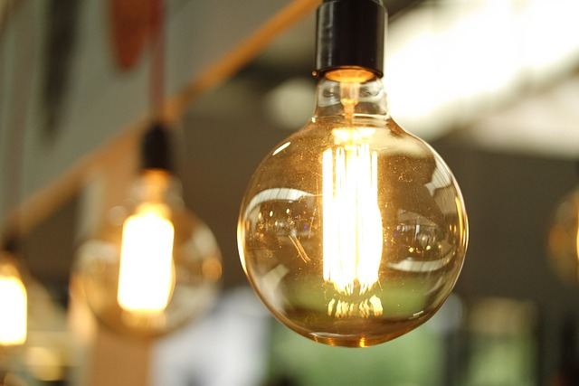

Introduction to Intelligent Power Management
The urgency to reconsider our energy consumption and render it more sustainable has never been greater than it is today. As climate change advances and natural resources become scarcer, attention is increasingly drawn to the efficiency of electricity and gas usage. At the heart of these efforts lie intelligent energy management systems, facilitating optimized energy utilization. These innovative systems offer households and company the opportunity to precisely control their energy consumption, reduce costs, and simultaneously make a valuable contribution to environmental protection. Advanced technologies are employed to monitor and regulate energy flow, providing unprecedented control through intelligent energy management systems. By utilizing smart meters and energy monitoring, which offer detailed consumption data, users can effectively control their energy consumption. The benefits of these technologies are diverse, ranging from reducing energy costs to curbing CO2 emissions, making them an essential tool in the fight against climate change.

Basics Of Energy Efficiency
A fundamental understanding of energy efficiency is essential for effectively managing energy consumption. Energy efficiency involves minimizing energy use while maintaining or improving performance. In households and companies, not only the direct consumption of electricity and gas plays a role, but also the usage patterns of devices, lighting, and heating systems. Identifying the main energy consumers is the first step towards optimizing energy use. In many cases, this includes heating and cooling buildings, preparing hot water, lighting, and operating electronic devices and machines. Analyzing energy consumption enables targeted measures to be taken to improve inefficient processes and reduce energy use. A key aspect of energy efficiency is understanding that not every energy-saving measure needs to compromise comfort or require significant investments. Many measures, such as optimizing heating and cooling systems or switching to energy-efficient lighting, can be implemented with little effort and still lead to significant savings. The fundamentals of energy efficiency encompass a wide range of strategies and techniques aimed at minimizing energy consumption while maintaining or even improving the quality of life. By implementing smart energy management systems and adopting efficient practices, both households and businesses can play their part in protecting the environment while reducing their energy costs..jpg)
Smart Power Management Tools
A fundamental understanding of energy efficiency is essential for effectively managing energy consumption. Energy efficiency involves minimizing energy use while maintaining or improving performance. In households and companies, not only the direct consumption of electricity and gas plays a role, but also the usage patterns of devices, lighting, and heating systems. Identifying the main energy consumers is the first step towards optimizing energy use. In many cases, this includes heating and cooling buildings, preparing hot water, lighting, and operating electronic devices and machines. Analyzing energy consumption enables targeted measures to be taken to improve inefficient processes and reduce energy use. A key aspect of energy efficiency is understanding that not every energy-saving measure needs to compromise comfort or require significant investments. Many measures, such as optimizing heating and cooling systems or switching to energy-efficient lighting, can be implemented with little effort and still lead to significant savings. The fundamentals of energy efficiency encompass a wide range of strategies and techniques aimed at minimizing energy consumption while maintaining or even improving the quality of life. By implementing smart energy management systems and adopting efficient practices, both households and businesses can play their part in protecting the environment while reducing their energy costs Efficient management of energy consumption is facilitated by intelligent tools and technologies that provide insights into energy flows and enable precise control. The most important instruments include smart meters and energy monitors, which offer real-time data on electricity and gas consumption. These devices allow users to monitor, analyze, and adjust their energy consumption to maximize efficiency and minimize costs. Traditional electricity meters are replaced by smart meters, providing detailed consumption information and enabling timely billing. Energy monitors complement smart meters by offering detailed insights into the consumption of individual devices or systems. This information is crucial for identifying potential savings and optimizing energy use. Furthermore, power management software and mobile apps play a central role in intelligent power management. They enable users to collect and analyze energy consumption data and make decisions based on this data. Many of these applications offer automation features, further reducing energy consumption and costs, for example, by automatically switching off devices when not in use or adjusting heating and cooling output based on actual demand.Tips For Efficient Electricity And Gas Consumption
To ensure efficient electricity and gas consumption, several practical measures can be implemented by both private households and companies. One of the most basic strategies is optimizing heating and cooling systems. Regular maintenance, the use of programmable thermostats, and building insulation can significantly reduce the energy required for heating and cooling. Another important aspect is lighting. Switching to LED bulbs can reduce energy consumption by up to 80% compared to traditional light bulbs. Additionally, utilizing daylight and installing motion detectors in less-used areas help reduce electricity consumption for lighting purposes. Renewable energies, such as solar or wind energy, offer a sustainable alternative for meeting energy needs. By installing photovoltaic systems on roofs or utilizing wind power, households and companies can generate their own green electricity, contributing to environmental protection. It is also crucial to pay attention to energy-efficient devices. When purchasing new household or office equipment, consideration should be given to the energy efficiency label, which provides information about energy consumption. Devices in standby mode also consume energy, so it is advisable to turn them off completely when not needed. Implementing these tips not only leads to a reduction in energy consumption and associated costs but also contributes to environmental protection. Through conscious action and the use of intelligent technologies, individuals can make a contribution to energy efficiency and have a positive impact on the environment and society.Case Studies And Success Stories
Implementing intelligent energy management systems and efficient consumption strategies has resulted in significant savings and environmental benefits in numerous homes and businesses worldwide. These case studies and success stories serve as inspiration and evidence that significant improvements can be achieved through targeted action and the use of modern technologies. Case Study 1:An Energy Self-Sufficient Residential Project A residential project was realized in Germany that relies entirely on renewable energies. By combining photovoltaic systems, heat pumps, and a modern battery storage solution, the project was able to achieve almost 100% energy self-sufficiency. Intelligent energy management systems control the energy flow between generation, storage, and consumption, optimizing the use of self-generated energy and minimizing the need for externally purchased electricity. This project impressively demonstrates how sustainable energy supply in the living area can be achieved through the use of green technology and intelligent control. Case Study 2: Energy Efficiency In Industry A medium-sized manufacturing company implemented a comprehensive energy management system to reduce its electricity and gas consumption. Significant savings were achieved by installing smart meters and using specialized software to analyze and optimize energy consumption. Additionally, energy-intensive production processes were relocated outside of peak load times to benefit from cheaper energy prices. These measures led to a 20% reduction in energy costs and contributed to reducing CO2 emissions.